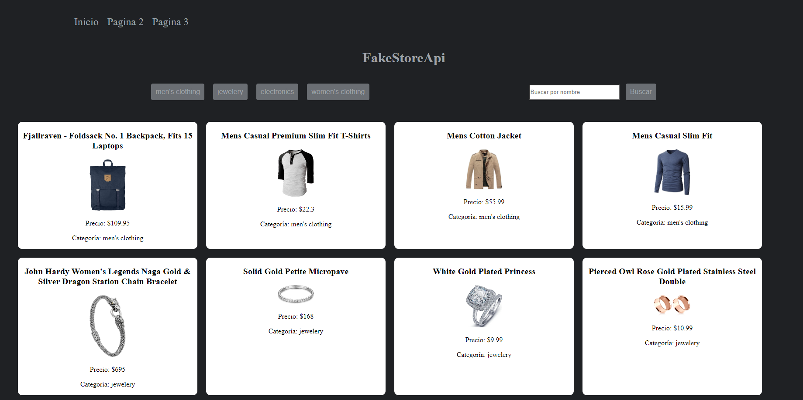
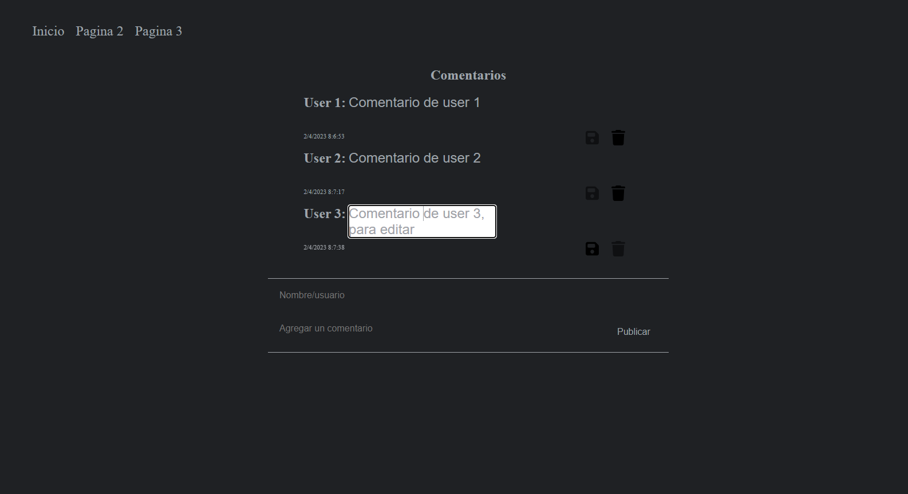

Información sobre la ampliación
La aplicación utiliza tecnologías como HTML, CSS, JS y SCSS. Se compone de tres páginas principales. En la primera página, se presenta información relevante sobre la aplicación, junto con un menú que permite navegar fácilmente a través de las otras páginas.
En la segunda página, se hace uso de la API fakestoreapi.com. En particular, se utiliza el endpoint https://fakestoreapi.com/products, el cual retorna un array de objetos que contienen información sobre productos ficticios. En esta página, los usuarios pueden interactuar con los datos utilizando filtros por categoría o mediante un campo de búsqueda que permite buscar productos por nombre. Pagina 2
La tercera página cuenta con un sistema que permite a los usuarios crear comentarios con su nombre y el texto del comentario. Los comentarios pueden ser editados después de ser creados. Al hacer clic en el comentario, se habilitará el botón de guardar y se deshabilitará el botón de eliminar. Después de hacer clic en guardar, el botón de eliminar se habilitará nuevamente y la fecha del comentario se actualizará para indicar que ha sido editado. Para mejorar la interacción, se agrega un asterisco (*) junto a la fecha para indicar que el comentario ha sido editado. Pagina 3
